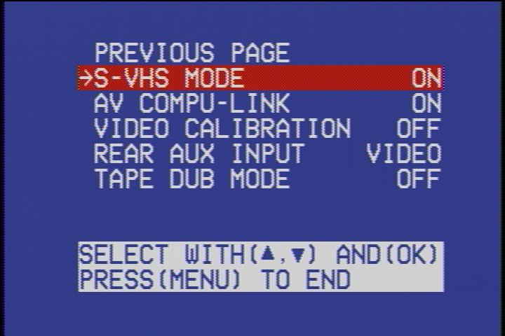

why

VHS menu 19335916 · popup: feature toggles
PARTIAL must: each toggle's state is shown as a word (on / off), not as a switch, slider or pill control
seen The state is now the words 'on' and 'off', but both sit inside an outlined pill with 'on' filled ink: a two-segment pill switch, not a bare word.
round 2 changes Drop the pill outline and fill: print the state as plain text ('on' or '[on] off') at the row's right edge.
VHS menu 19335916 · popup: feature toggles
UNSEEN must: the current (hovered or focused) row is marked by one solid colour band across the whole row
seen Both screenshots show the popup at rest with no row hovered or focused; no band is visible. A screenshot with a toggle row hovered or keyboard-focused is missing.
round 2 changes Supply a screenshot with one toggle row hovered/focused; that row should carry a full-width solid ink or rose band with reversed text.
VHS menu 19335916 · popup: feature toggles
FAIL must: the toggles read as a plain list of text rows, not rows inside a rounded card
seen The four toggles are still inside a white (light) / dark-grey (dark) rounded grouped card with hairline separators, the same structure as today.
round 2 changes Remove the card background, radius and separators for the toggle group; set the rows as bare text lines on the page background.
VHS menu 19335916 · popup: feature toggles
FAIL must_not: a switch or pill-shaped control on any toggle row
seen Every toggle row ends in a rounded pill outline holding 'on' (ink-filled capsule) and 'off': a pill-shaped control.
round 2 changes Remove the pill border and capsule fill from .toggle; leave only the state word(s).

Struck-through done items 20770715 · popup: this-page status
PARTIAL must: when a banner was handled, the main status line names the handled thing struck through, at full text size
seen The status line reads '~~cookie banner~~ refused': 'cookie banner' is struck through at the same size, but set in muted grey while the unstruck 'refused' in full ink carries the line.
round 2 changes Make the struck 'cookie banner' the line itself, in full ink at full contrast; drop 'refused' or move it to the small sub-line.
Struck-through done items 20770715 · popup: this-page status
FAIL must: the handled row is set apart as a filled row (a colour field), the way done items are in the reference
seen The handled row sits in the same white/dark-grey card as every other group, led by a small green dot; no colour field marks it.
round 2 changes Fill the handled status row edge to edge with one flat colour (e.g. rose) behind the struck text, and drop the dot.
Struck-through done items 20770715 · popup: this-page status
FAIL must_not: the strike only on a small grey prefix while the line is carried by an unstruck word
seen The strike is on a grey 'cookie banner' prefix and the line is carried by the unstruck, darker 'refused': the pattern this rules out, only the prefix is not smaller.
round 2 changes Put the strike on the word that carries the line, in full ink; no unstruck verdict word competing with it.

iA Writer Focus Mode 2092684 · popup: attention
FAIL must: one thing is at full contrast (this page's status); the rest of the popup is visibly quieter
seen The toggle labels, the four ink-filled 'on' capsules, the ink 'refuse' capsule and the report/settings rows are all at full contrast; the status line is no louder than them, and its struck part is greyed down.
round 2 changes Set toggles, site choice and report/settings in the muted colour (or lighter weight) and keep only the this-page status at full ink.
iA Writer Focus Mode 2092684 · popup: attention
FAIL must_not: several accents competing at full strength (coloured dots, filled pills, ink buttons)
seen Five ink-filled capsules (four 'on', one 'refuse'), a green status dot and the rose logo all appear at full strength at once.
round 2 changes Remove the filled 'on' capsules and the green dot; leave at most one filled accent (the chosen site option) besides the status.

Martian Mono 31399571 · all: type
FAIL must: Martian Mono at its natural width; the layout makes room for it
seen The glyphs are visibly narrower than Martian Mono's natural wide setting so rows fit today's widths; popup.html sets font-stretch: 81% on body.
round 2 changes Remove font-stretch: 81% (use 100%) and widen the popup or wrap/shorten labels so rows fit.
Martian Mono 31399571 · all: type
FAIL must_not: the typeface condensed (font-stretch below 100%) to fit today's rows
seen Body text is condensed (font-stretch: 81% in extension/popup/popup.html line 34), visibly narrow in both screenshots.
round 2 changes Set font-stretch to 100% and let the layout grow.